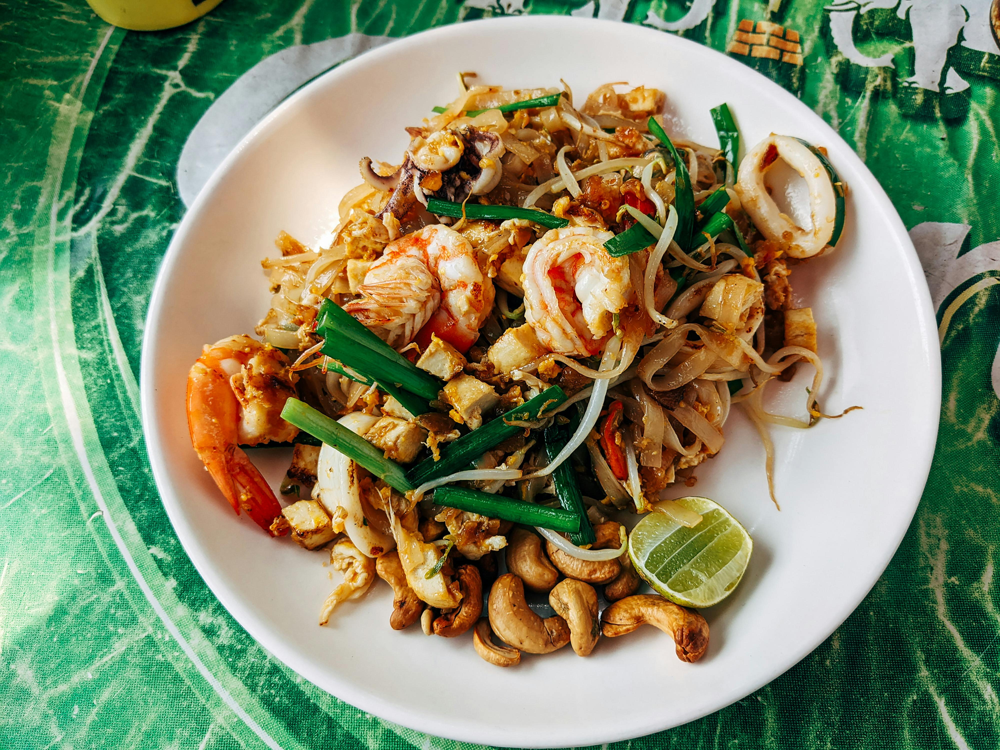

Pad Thai

A simple dish yet very hard to mastered. Any restaurant can make it, but only a few can cook it good
Everytime you ask a Westerner if they've tried Thai food, 80% of the time, Pad Thai would be mentioned
Ingredients
- Rice noodles
- Shrimps
- Shallots
- Garlics
- Firm tofus
- Roasted peanuts
- Seet preserved radishes
- Chili flakes
- Chives
- Eggs
- Limes
- Palm sugar
- Tamarind paste
- Fish sauce
Add little by little until you get the perfect flavor for yourself.
Cooking
Sauce
- Chop palm sugar and melt it over medium heat
- Once it's caramelized, add tamarind paste and fish sauce
Pad Thai
- Stir fry shrimps until it's browned on one side
- Add shallots, garlic, tofu, dried shrimp, preserved radish, and chili flakes and saute until the garlic starts to turn color
- Add noodles and sauce then stir fry it
- Add eggs and stir fry it until every part is coated with eggs and cooked
Home